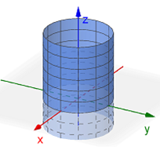
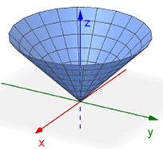
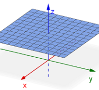
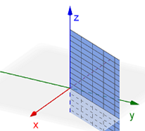

Cylindrical
The cylindrical coordinate system is an extension of the polar coordinate system from 2D to 3D. Recall that the polar coordinate system defines \( (x,y) \) points as \( (r, \theta ) \) where \(r\) is the radial distance from the origin and \(\theta\) is the rotation from the positive \(x\)-axis. In the cylindrical coordinate system, we express the point \((x,y,z)\) as \((r,\theta,z)\). So the \(x\) and \(y\) position of the point is defined in polar and the height is still \(z\).
The following GeoGebra applet will help illustrate how a point in space can be represented using the rectangular (Cartesian), cylindrical, and spherical coordinate systems. You may click-and-drag to rotate the view around the origin.
- Use the orange (x, y) point and z slider on the xy-plane to change the position of the blue point on the 3D axes. The coordinates of the point, in the form (x, y, z), appear in the top corner of the 3D window.
- Uncheck the Rectangular box and check the Cylindrical box. Notice how the xy-plane changes. Now the grid lines consist of concentric circles representing a distance from the origin along with a number of diagonal lines representing the angle of rotation from the positive x-axis (each line is a π/12 rotation).
- Use the orange point and slider again to change the position of the blue point on the 3D axes. The coordinates of the point again appear in the top corner, this time in the form (r, θ, z).
Observations:
- The location of the point in Cartesian space is determined by the perpendicular distances, which are parallel to the individual axes.
- In cylindrical space, the value of \(r\) gives the distance in the \(xy\)-plane from the origin to the point. The value of \(\theta\) represents the rotation in the \(xy\)-plane from the positive \(x\)-axis. The value of \(z\) still represents the height of the point above the \(xy\)-plane.
Here are some common graphs in cylindrical coordinates that we will encounter.
| Equation | Graph |
|---|---|
| Cylinder \(r=a\) \((a \gt 0)\) |
 |
| Cone \(z=ar\) \((a \ne 0)\) |
 |
| Horizontal Plane \(z=a\) |
 |
| Vertical Half Plane \(\theta=a\) |
 |
Converting Equations
There are four equations that we may need in order to convert equations between the rectangular and cylindrical coordinate systems. Notice that these are the same equations we use to convert between rectangular and polar coordinates.
| Rectangular To Cylindrical | Cylindrical To Rectangular |
|---|---|
| \[x^2+y^2=r^2\] | \[x=r\cos(\theta)\] |
| \[\tan(\theta)=\frac{y}{x}\] | \[y=r\sin(\theta)\] |
The following videos give a few examples demonstrating how to convert equations between rectangular and cylindrical coordinates.
Triple Integrals
Given a continuous function \(f(x,y,z)\) through a solid \(E\) whose projection \(D\) onto the \(xy\)-plane that can be expressed using polar coordinates, the triple integral of \(f\) over \(E\) can be computed using the following integral, where \(g_1(r,\theta) \le z \le g_2(r,\theta)\), \(h_1(\theta) \le r \le h_2(\theta)\), and \(\alpha \le \theta \le \beta\).
\[\underset{E}{\mathop \iiint} \,f(x,y,z)~dV=\int_{\alpha}^{\beta}\int_{h_1(\theta)}^{h_2(\theta)}\int_{g_1(r,\theta)}^{g_2(r,\theta)}\,f(r\cos(\theta),r\sin(\theta),z)\,r~dz~dr~d\theta\]